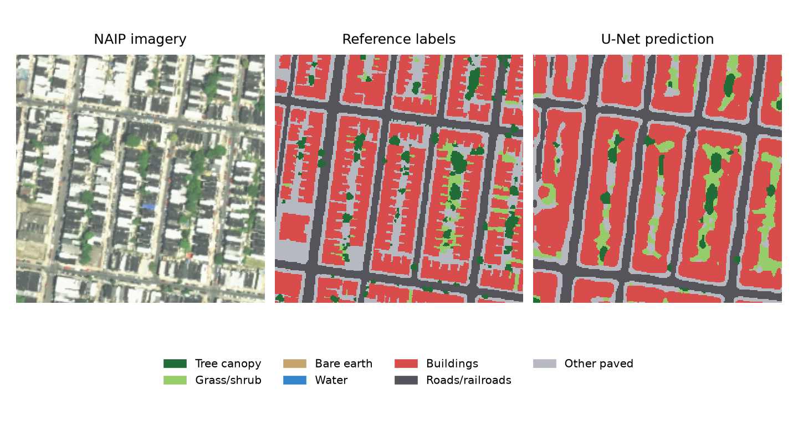

Machine learning / Academic project
Mapping Philadelphia, pixel by pixel
Seven classes. Separate geographic tests.

01 / QUESTION
How well can a U-Net distinguish seven land-cover classes in Philadelphia when training and evaluation areas are kept apart?
02 / APPROACH
For Assignment 6 in AI for Urban Sustainability, I adapted Xiaojiang Li’s Lab 9 tutorial into a four-input, seven-class ResNet-18 U-Net. Training and validation used separate 2,048-pixel blocks with at least 512-pixel gaps from held-out areas. I reviewed bare-earth errors, accepted 28 visually checked training crops, compared cross-entropy with cross-entropy plus Dice using two data-order seeds, and selected 50% overlapping probability blending on validation results.
03 / RESULTS
On the original test areas, accuracy rose from 73.97% to 74.63%, mean IoU from 0.550 to 0.564, and bare-earth IoU from 0.032 to 0.062. On two newly reserved areas, the updated pipeline scored 65.63% accuracy and 0.429 mean IoU, compared with 64.83% and 0.409 for the previous model on those same pixels. Validation seam errors fell from 25.8% to 4.7% with overlap. The Dice loss change alone did not consistently improve bare earth.
04 / MY CONTRIBUTION
Multiclass label preparation, spatial splitting, model training and controlled comparisons, visual error review, evaluation, and georeferenced map export. Adapted from Xiaojiang Li’s course materials.
05 / WHAT THIS DOES & DOESN’T ESTABLISH
Performance varies by location. The original-area result is a follow-up with the model and inference settings unchanged; the new areas were evaluated after validation-based selection. Bare earth remains weak, visually checked additions are mostly sports infields, and source dates and exact band identities are unconfirmed. Reference-label disagreements remain. These maps describe surface cover, not functional land use or verified citywide accuracy. The published notebook records the completed experiments; the large training-data and model files are not bundled with this web report.